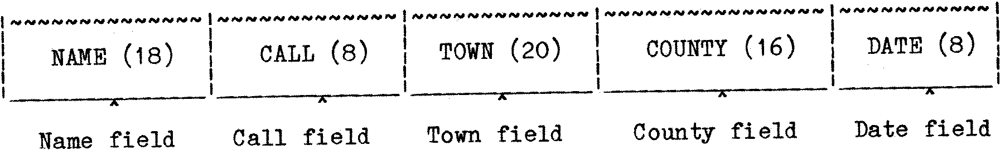

80-Bus News |
September–October 1983 · Volume 2 · Issue 5 |
| Page 16 of 67 |
|---|
Record saved. Undoubtedly this leads to wasted space since many Data items may contain a lesser number of characters, but it is usually not worth worrying about for Domestic or small Business jobs. After all if the disk has 350K of space, and CP/M, BASIC and the operating Program use say 50K bytes then it is possible to store over 4000 (70 character) Records in the remaining space. It is also possible to split the Data over several disks. (If the original guess of maximum length of a field was too small, it will be necessary to abbreviate the Data, or a program may be written to Read and rewrite the original Data file, but with a longer Field for the item in question.)
The various items that make up the Record are saved on disk in sections called ‘Fields’ :–
One complete Record of 70 characters for the Radiolog program would be :–
Since the Record length is fixed, BASIC can easily ‘calculate’ where any record starts relative to the beginning of the Data file, thus allowing easy access. Unused characters in a field are ‘padded out’ with blanks. The article by Mr Coker implied that a Record could not exceed 128 Bytes in length. This is certainly not the case with Vers. 5.2 of MBASIC. I have used Records of around 600 bytes in some Programs. In order to use records longer than 128 bytes though, MBASIC must be ‘informed’ about the longer record when it is executed as follows :–
MBASIC FILENAME / S: 286 (for 286 BYTE Records)
It is not necessary to use the / S switch for records of less than 128 Bytes. Note also that use of the / S switch does NOT make it unnecessary to declare the Record length when a file is ‘OPEN’ed within the program. If you change the length of Records or Fields during program development, be sure that you always change the Field and Record declarations, or the program will either crash, or you will get some funny Data outputs. The sum of ALL the Fields MUST equal the length of record declared when the File is OPENed from within the Data processing program.
If MBASIC is run up with the / S option specifying a record longer than 128 bytes, one of two situations can arise when the File is OPENed. If the total Record declared on OPENing the File is longer than specified on run-up, then an error message will occur when the line OPENing the File is reached. But if the OPENing length is equal to, or less than the / S: declaration however, no errors occur.
I have used the BASCOM Compiler to compile files with records of up to 600 bytes or so quite successfully, without having to ‘declare’ them in some way before compiling.
| Page 16 of 67 |
|---|